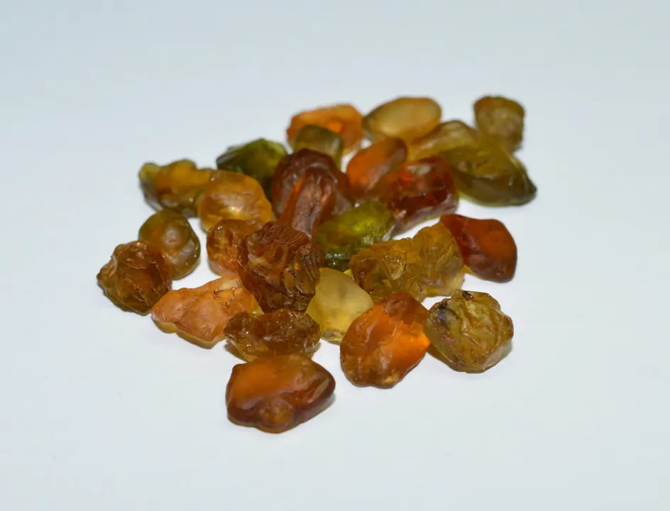

月光石：凝結的月光
月光石把月光凝結在石頭裡——其實那是光的散射魔術，藏在兩種長石的夾層間。

核心定義
月光石（moonstone）是長石家族（鉀鈉長石系列）的成員：由鈉長石與正長石兩種礦物層狀交錯生長而成。硬度 6–6.5、折射率 1.52–1.53、比重 2.56。它的招牌是「月光效應」（adularescence）——藍色或白色的柔光在表面流動。
月光石的名字來自它如月光般的柔光——斯里蘭卡是經典產地（高品質藍暈），印度、緬甸、馬達加斯加也有出產。它是「六月生辰石」，也被譽為「旅行者之石」。
特徵與分類
| 類型 | 特徵 | 市場 |
|---|---|---|
| 藍暈月光石 | 藍色月光效應 | 最貴 |
| 白月光石 | 白色暈彩 | 主流 |
| 彩虹月光石 | 多色暈彩 | 受歡迎 |
| 灰月光石 | 灰色底 | 平價 |
月光效應的品質看「暈彩的清晰度與底色」：藍色暈彩最珍貴（斯里蘭卡）、白色暈彩經典、彩虹暈彩（拉長石系）受年輕人喜愛。暈彩要「流動」——靜止呆板者品質低。
科學原理
月光效應的光學：鈉長石與正長石的層狀結構（厚度與光波長相近）使光線干涉散射——藍光被散射出來，形成流動的柔光。層狀結構越規則，暈彩越清晰。
鑑定：折射率 1.52–1.53（低）、比重 2.56——與蛋白石（比重 2.0 輕）、玉髓（折射率 1.54）區分。月光石怕碰撞（解理發育）——「月光」其實脆得很。
鑑定與鑑別方法
- 看暈彩：流動的藍/白光
- 折射儀：1.52–1.53
- 掂比重：2.56 較輕
- 看解理：月光石怕撞
- 排除玻璃仿品：無暈彩流動
市場行情與保養建議
行情：高品質藍暈月光石（斯里蘭卡）每克拉可達數百人民幣；白月光石親民；彩虹月光石受設計市場歡迎。月光石的價格看「暈彩品質＋底色乾淨度」。
選購：找「藍暈明顯＋底色乾淨」的月光石——暈彩要流動、底色要通透。月光石的美，在「動」不在「靜」。
常見誤區
月光石不發光——它只是散射光線（月光效應）。「發光」是光學幻覺，不是螢光。
名字浪漫，但月光石與月亮無關——它是長石的光學效應。浪漫歸浪漫，科學歸科學。
冷知識
他們認為月光石裡藏著月神的凝視——佩戴者能預知未來。月光石的傳說，和月光一樣古老。
傳說它能保護旅人平安——新月時佩戴效果最佳。旅途的護身符，帶了一千年的浪漫。
反直覺觀點
月光效應需要層狀結構散射光——「霧感」反而是品質。透明如玻璃的月光石，反而沒有暈彩。
長石解理發育——月光石的硬度不高、韌性差。凝結的月光，需要細心呵護。